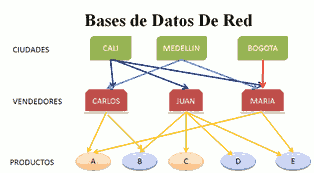
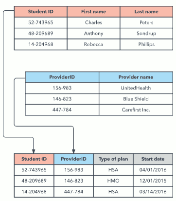

Una base de datos es una colección estructurada de información que se almacena de manera organizada para permitir el acceso, la gestión y la recuperación eficientes de datos.
La base de datos no sólo contiene los datos de la organización, también almacena una descripción de dichos datos. Esta descripción es lo que se denomina metadatos, se almacena en el diccionario de datos o catálogo.
Las bases de datos se utilizan en una variedad de aplicaciones, como sistemas de gestión de inventario, sistemas de gestión de clientes, sistemas de información geográfica (SIG), sistemas de reservas, sistemas de contabilidad y muchas más. Proporcionan una forma eficiente y estructurada de almacenar y gestionar datos, lo que facilita el acceso y la recuperación de información importante.
El uso de la BBDD es diferente según la persona que la utilice:
- El administrador: encargado de la creación o implementación física de la base de datos. Es quien escoge los tipos de ficheros, los índices que hay que crear, la ubicación de éstos, etc. En general, es quien toma las decisiones relacionadas con el funcionamiento físico del almacenamiento de información.
- Los diseñadores: encargados de diseñar cómo será la base de datos. Llevarán a cabo la identificación de los datos, las relaciones entre ellos, sus restricciones, etc. Para ello han de conocer a fondo los datos y procesos a representar en la base de datos.
- Los programadores de aplicaciones: se encargarán de implementar los programas de aplicación que servirán a los usuarios finales. Estos programas de aplicación ofrecerán la posibilidad de realizar consultas de datos, inserción, actualización o eliminación de los mismos.
- Los usuarios finales: son los clientes finales de la base de datos. Al diseñar, implementar y mantener la base de datos se busca cumplir los requisitos establecidos por
el cliente para la gestión de su información.
Tipos de BBDD
A) Según el modelo
Un modelo de base de datos muestra la estructura lógica de la base, incluidas las relaciones y limitaciones que determinan cómo se almacenan los datos y cómo se accede a ellos
Modelo Jerárquico
 Las BBDD jerárquicas se almacena la información en una estructura jerárquica o con un orden de importancia. Organiza los datos en una estructura de árbol, en la que cada registro tiene un único elemento o raíz. Los registros del mismo nivel se clasifican en un orden específico. Ese orden se usa a manera de orden físico para almacenar la base de datos. El modelo es bueno para describir muchas relaciones del mundo real. Fue utilizado por IBM en la década de los 70 pero hoy en día apenas se usa.
Las BBDD jerárquicas se almacena la información en una estructura jerárquica o con un orden de importancia. Organiza los datos en una estructura de árbol, en la que cada registro tiene un único elemento o raíz. Los registros del mismo nivel se clasifican en un orden específico. Ese orden se usa a manera de orden físico para almacenar la base de datos. El modelo es bueno para describir muchas relaciones del mundo real. Fue utilizado por IBM en la década de los 70 pero hoy en día apenas se usa.
Modelo en Red
Tienen un gran parecido a las jerárquicas; su diferencia principal en la composición del nodo. En este modelo los nodos pueden tener diversos padres.
En la actualidad este tipo de base de datos no es usado con frecuencia
Modelo Transaccional
Estas bases de datos cumplen una función muy específica. Se encargan del envío y recepción de datos a gran velocidad. Suele utilizarse en los sistemas bancario que registrna operaciones de intercambio de dinero entre cuentas.
Modelo relacional
El centro de este modelo de BBDD es el uso de las “relaciones” entre datos. El lenguaje predominante en estas bases de datos es el Structured Query Language conocido como SQL. Su funcionamiento radica en introducir todos los datos en registros, que posteriormente se organizan en tablas. Estas BBDD son recomendables cuando los datos que vamos a utilizar tienen un margen de error nulo y no requieren modificaciones constantes.
Modelo orientado a objetos
Este modelo define una base de datos como una colección de objetos, o elementos de software reutilizables, con funciones y métodos relacionados. Hay varios tipos de bases de datos orientadas a objetos:
- Una base de datos multimedia incorpora elementos multimedia, tales como imágenes, que no se podrían almacenar en una base de datos relacional.
- Una base de datos de hipertexto permite que cualquier objeto se conecte a cualquier otro objeto. Es útil para organizar lotes de datos disímiles, pero no es ideal para análisis numérico.
El modelo de base de datos orientado a objetos es el mejor modelo conocido de base de datos posrelacional ya que incorpora tablas, pero no se limita a ellas. A dichos modelos también se los conoce como modelos de base de datos híbridos.
Modelo de documentos
Las bases de datos documentales son un modelo interesante de conjuntos de información que utilizan documentos como la estructura de almacenamiento y consulta de datos. Están construidas con lenguaje NoSQL lo que le proporciona un gran número de ventajas técnicas y de flexibilidad. Permite el manejo de pesados volúmenes de información en periodos mínimos de tiempo. Su diversidad de funciones y módulos adaptables a múltiples mecanismos de consulta la han convertido en uno de los modelos preferidos de trabajo en la actualidad por parte de los programadores.
Modelo deductivos
Una base de datos deductiva es una BBDD que permite la posibilidad de hacer deducciones a través de una inferencia. Su funcionalidad depende de las condiciones y hechos que se almacenan en la base de datos. También son conocidas como bases de datos lógicas ya que sus principios están fundamentados en la lógica matemática.
Nacen como respuesta a las limitaciones que surgen en las bases de datos relacionales a la hora de ejecutar consultas recursivas y teorizar sobre las relaciones indirectas que pudiesen generarse entre los datos almacenados. Utiliza un lenguaje llamado datalog que le permite al ordenador resolver las deducciones para contestar consultas.
B) Según la distribución de la información
Centralizadas
 Una BBDD Centralizada es un sistema de gestión de datos en el que toda la información se almacena y gestiona en un único lugar o servidor central. En este enfoque, todas las aplicaciones y usuarios acceden a la base de datos centralizada para realizar consultas, actualizaciones y otras operaciones relacionadas con los datos. Ventajas:
Una BBDD Centralizada es un sistema de gestión de datos en el que toda la información se almacena y gestiona en un único lugar o servidor central. En este enfoque, todas las aplicaciones y usuarios acceden a la base de datos centralizada para realizar consultas, actualizaciones y otras operaciones relacionadas con los datos. Ventajas:
- Un único punto de acceso: todos los usuarios y aplicaciones acceden a la misma base de datos central para obtener y modificar datos.
- Control centralizado: la administración y el control de la base de datos residen en un único lugar, lo que facilita la implementación de políticas de seguridad y control de acceso.
- Consistencia de datos: debido a que todos los datos residen en un único lugar, es más fácil mantener la integridad y la coherencia de los datos.
- Sencillez: en comparación con sistemas distribuidos, las bases de datos centralizadas tienden a ser más simples de administrar y mantener.
- Más económico: tanto en los recursos necesarios para su implantación como en el mantenimiento.
Sin embargo, las bases de datos centralizadas también tienen algunas limitaciones y desafíos, como:
- Puntos únicos de fallo: si el servidor central falla o experimenta problemas, puede afectar a todas las aplicaciones y usuarios que dependen de él.
- Escalabilidad limitada: a medida que la cantidad de datos y la carga de trabajo aumentan, una base de datos centralizada puede llegar a ser insuficiente y difícil de escalar para satisfacer las necesidades crecientes.
- Latencia: los usuarios y aplicaciones que se encuentran lejos del servidor central pueden experimentar latencia al acceder a los datos.
- Riesgos de seguridad: la seguridad de la base de datos centralizada es crucial, ya que un acceso no autorizado o un ataque exitoso puede comprometer todos los datos.
En muchos casos, las organizaciones eligen utilizar bases de datos centralizadas cuando tienen un conjunto de datos y requisitos de acceso que se pueden gestionar eficazmente de esta manera. Sin embargo, en entornos con necesidades de escalabilidad, alta disponibilidad o distribución geográfica, pueden optar por soluciones de bases de datos distribuidas o en la nube para abordar estas preocupaciones.
SGBD Distribuidas
 Una base de datos distribuida es un sistema de gestión de datos en el que los datos se almacenan en múltiples ubicaciones físicas o servidores interconectados. Los datos se dividen y replican entre múltiples nodos o servidores. Cada nodo en la base de datos distribuida puede tener su propia capacidad de procesamiento y almacenamiento. Ventajas:
Una base de datos distribuida es un sistema de gestión de datos en el que los datos se almacenan en múltiples ubicaciones físicas o servidores interconectados. Los datos se dividen y replican entre múltiples nodos o servidores. Cada nodo en la base de datos distribuida puede tener su propia capacidad de procesamiento y almacenamiento. Ventajas:
- Distribución geográfica: los datos se almacenan en diferentes ubicaciones geográficas, lo que permite un acceso más rápido a los datos para los usuarios en esas áreas.
- Alta disponibilidad: debido a la redundancia de datos en múltiples nodos, las bases de datos distribuidas suelen ofrecer una mayor disponibilidad y resistencia a fallos. Si un nodo falla, los datos todavía están disponibles en otros nodos.
- Escalabilidad: es más fácil escalar una base de datos distribuida añadiendo nuevos nodos según sea necesario para manejar un mayor volumen de datos o una mayor carga de trabajo.
- Rendimiento mejorado: la distribución de datos puede mejorar el rendimiento al permitir que las consultas se realicen en paralelo en múltiples nodos.
- Balance de carga: los sistemas de bases de datos distribuidas a menudo tienen mecanismos para equilibrar la carga de trabajo entre los nodos, asegurando que ningún nodo se sobrecargue.
Inconvenientes:
- Complejidad de administración: la configuración, administración y mantenimiento de una base de datos distribuida puede ser más compleja que una base de datos centralizada.
- Consistencia de datos: mantener la consistencia de los datos distribuidos a través de múltiples nodos puede ser complicado, y se requieren mecanismos de sincronización y control de versiones.
- Latencia de red: la latencia de red puede ser un problema si los nodos distribuidos están geográficamente separados, lo que puede afectar el rendimiento de las consultas.
- Seguridad: la seguridad de una base de datos distribuida debe ser cuidadosamente gestionada, ya que la distribución de datos puede aumentar la superficie de ataque.
Fragmentación de una BBDD distribuida
Es una técnica para particionar una base de datos en unidades más pequeñas y manejables llamadas fragmentos, con cada fragmento alojado en un servidor separado. Viene a ser como organizar un bufet libre de diez platos para todos los clientes de un hotel de 2000 huéspedes. En lugar de una única mesa de bufet con todos los platos, ponemos cada plato en su propia mesa, separando unas mesas de otras. De esta manera, más comensales pueden servirse a sí mismos simultáneamente, más rápidamente y con menos cuellos de botella.
Ventajas:
- Rendimiento mejorado. Acceso paralelo y un rendimiento de consulta más rápido.
- Escalabilidad mejorada. permite aumentar los recursos en cada uno de los servidores, o dedicar mayor cantidad de servidores.
- Mayor tolerancia a fallos . En una base de datos fragmentada, si un fragmento experimenta un problema, los otros siguen estando operativos.
- Recuperación eficiente de los datos. Las estaciones individuales o las bases de datos fragmentadas permiten un acceso más rápido y dirigido a la información específica. Al haber varios servidores atendiendo a los usuarios, el tiempo de respuesta será menor que si solo hay un servidor atendiendo a usuarios.
Inconvenientes:
- La implementación de una BBDD distribuida es compleja.
- La fragmentación debe ser equilibrada, de forma que el trabajo quede distribuido entre los servidores de forma equitativa, evitando sobrecargar un servidor y que los otros estén ociosos.
- La búsqueda de información que se encuentra distribuida en varios servidores puede resultar algo más lenta.
Técnicas de fragmentación
- Fragmentación basada en el rango: consiste en dividir los datos en función de los rangos de valores especificados. Ejemplo: una plataforma de comercio electrónico fragmenta su base de datos de clientes basándose en los importes de compra. Un fragmento maneja a los clientes con cantidades de compra bajas, otro con cantidades moderadas, etc. Esto facilita la recuperación eficiente de ciertos tipos de consultas.
- Fragmentación basada en hash: implica aplicar una función hash a una clave de shard elegida (por ejemplo, ID de cliente). El resultado determina el fragmento en el que se almacenan los datos. Ejemplo: en una plataforma de redes sociales, los datos de los usuarios pueden fragmentarse mediante hash basándose en los ID de usuario. La función hash asignaría constantemente a cada usuario a un fragmento específico. Este enfoque garantiza una distribución homogénea de los usuarios entre fragmentos, lo que promueve un acceso y un almacenamiento de datos equilibrados.
- Fragmentación basada en listas: implica especificar explícitamente qué fragmentación almacenará ciertos datos basándose en una lista predefinida de valores. Ejemplo: una aplicación de mensajería podría fraccionar una base de datos de historial de chat basada en el código del país. Cada fragmento es responsable de las conversaciones que se originan o que implican a usuarios en países específicos.